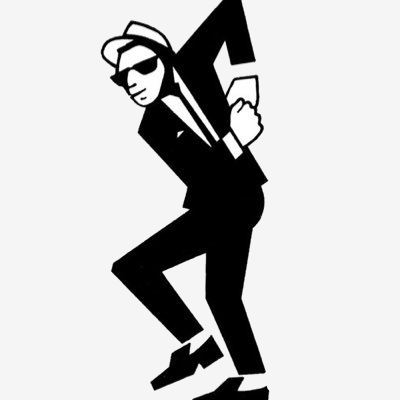

The 2 Tone Story
A History of British Ska
A History of British Ska
The Specials - Gangsters (1979)
The Selecter - On My Radio (1980)
The Beat - Tears of a Clown (TOTP 1979)
Madness - Baggy Trousers (1980)
Bad Manners - Special Brew (TOTP 1980)
The Specials were an English ska revival band formed in 1977 in Coventry. The original lineup of the group consisted of Terry Hall and Neville Staple on vocals, Jerry Dammers on keyboards, Lynval Golding and Roddy Radiation on guitars, Horace Panter on bass, John Bradbury on drums, and Dick Cuthell and Rico Rodriguez on horns. The band wore mod-style 1960s period rude boy outfits (pork pie hats, tonic and mohair suits and loafers). Their music combines the danceable rhythms of ska and rocksteady with the energy and attitude of punk. Lyrically, their work - often written by primary songwriter Dammers - presented overt political and social commentary.
The band's most successful releases were their 1980 The Special AKA Live! EP, featuring lead track "Too Much Too Young", which reached No. 1 on the UK Singles Chart and their 1981 recession-themed single "Ghost Town" which also occupied the No. 1 spot in the UK.
The group was formed in 1977 by songwriter/keyboardist Dammers, vocalist Tim Strickland, guitarist/vocalist Lynval Golding, drummer Silverton Hutchinson and bassist Horace Panter ("Sir Horace Gentleman"). Strickland was replaced by Terry Hall shortly after the band's formation. The band was first called the Automatics, then the Coventry Automatics. Guitarist Roddy Byers ("Roddy Radiation") agreed to join the band in March 1978 ahead of a recording session of demos.
After another band called the Automatics signed a record deal with Island Records the new line-up changed their name to The Special A.K.A. The Automatics . The new name was eventually shortened to The Special AKA which was soon shortened to The Specials - the moniker that would be used for most of the band's career.
Joe Strummer of The Clash had attended one of their concerts, and invited the Special AKA to open for his band in their "On Parole" UK tour. This performance gave the Special AKA a new level of national exposure, and they briefly shared the Clash's management. During the tour Neville Staple, who was initially one of the roadies, became a full member of The Specials when his version of Monkey Man by Toots and the Maytals was incorporated into the group's set.
In 1979, Dammers formed the 2 Tone Records label and released the band's debut single "Gangsters", a reworking of Prince Buster's "Al Capone". "The Selecter" by The Selecter appeared on the B-side. The fledgling 2 Tone records released Gangsters / The Selecter in a completely independent do-it-yourself operation. After initial good sales, Rough Trade then agreed to repress and distribute the single through its independent distribution network. In May 1979 John Peel played the record on his influential late night BBC Radio One show. The record became a Top 10 hit that summer.
Following the release and early success of "Gangsters", major record labels lined up with offers to sign the Specials. The aim of the Specials was not only to secure a record deal for the group but to get an agreement that would establish 2 Tone as an independent sub-label. The plan was for 2 Tone to put out singles by non-signed bands who would not be held to any contract. Chrysalis agreed to the terms that would establish 2 Tone as a viable independent label and the Specials would get the backing of a major record company.
The band had begun wearing mod/rude boy/skinhead-style two-tone tonic suits, along with other elements of late 1960s teen fashions. Changing their name to the Specials, they recorded their eponymous debut album in 1979, produced by Elvis Costello. Horn players Dick Cuthell and Rico Rodriguez were featured on the album, but would not be official members of the Specials until their second album.
The band's second album, More Specials, was not as commercially successful and was recorded at a time when, according to Hall, conflicts had developed in the band. Backing vocalists on the first two studio albums included Chrissie Hynde, Rhoda Dakar (then of the Bodysnatchers and later of the Special AKA), and Belinda Carlisle, Jane Wiedlin and Charlotte Caffey of the Go-Go's. In the first few months of 1981, the band took a break from recording and touring, and then released "Ghost Town", a non-album single, which reached No. 1 in 1981.
At their Top of the Pops recording of Ghost Town, Staple, Hall and Golding announced they were leaving the band. Golding later said: "We didn't talk to the rest of the guys. We couldn't even stay in the same dressing room. We couldn't even look at each other. We stopped communicating. You only realise what a genius Jerry was years later. At the time, we were on a different planet." Shortly afterwards, the three left the band to form Fun Boy Three.
For the next few years, the group was in a constant state of flux. Adding Dakar to the permanent line-up, the group recorded "The Boiler" with Dakar on vocals, Dammers on keyboards, Bradbury on drums, John Shipley (from the Swinging Cats) on guitar, Cuthell on brass and Nicky Summers on bass. The single was credited to "Rhoda with the Special AKA". The track describes an incident of date rape, and its frank and harrowing depiction of the matter meant that airplay was severely limited. Nevertheless, it managed to reach No. 35 on the UK charts, and American writer Dave Marsh later identified "The Boiler" as one of the 1,001 best "rock and soul" singles of all time in his book The Heart of Rock & Soul.
After going on tour with Rodriguez, the band (without Dakar, and as "Rico and the Special AKA") also recorded the non-charting (and non-album) single "Jungle Music". The line-up for the single was Rodriguez (vocal, trombone), Cuthell (cornets), Dammers (keyboards), Bradbury (drums), Shipley (guitar), returning bassist Panter, and new additions Satch Dickson and Groco (percussion) and Anthony Wymshurst (guitar).
Rodriguez and the three newcomers were all dropped for the next single, "War Crimes", which brought back Dakar and added new co-vocalists Egidio Newton and Stan Campbell, as well as violinist Nick Parker. Follow-up single "Racist Friend" was a minor hit (UK No. 60), with the band establishing themselves as a septet: Dakar, Newton, Campbell, Bradbury, Cuthell, Dammers and Shipley.
The new line-up (still known as the Special AKA) finally issued a new full-length album In the Studio in 1984. Officially, the band was now a sextet: Dakar, Campbell, Bradbury, Dammers, Shipley and new bassist Gary McManus. Cuthell, Newton, Panter and Radiation all appeared on the album as guests; as did saxophonist Nigel Reeve, and Claudia Fontaine and Caron Wheeler of the vocal trio Afrodiziak. Both critically and commercially, In The Studio was less successful than previous efforts, although the 1984 single "Free Nelson Mandela" was a No. 9 UK hit. The latter contributed to making Mandela's imprisonment a cause célèbre in the UK, and became popular with anti-apartheid activists in South Africa. Dammers then dissolved the band and pursued political activism.
The Selecter is an English 2 tone ska revival band, formed in Coventry, England, in 1979. The band featured a diverse line-up, both in terms of race and gender, initially consisting of Arthur 'Gaps' Hendrickson and Pauline Black on lead vocals, Neol Davies and Compton Amanor on guitar, Desmond Brown on Hammond organ, Charley 'Aitch' Bembridge on drums, and Charley Anderson on bass. The band's name comes from the original "The Selecter" track, which appeared on the flip side of The Special AKA's "Gangsters" single in 1979, and was written by Neol Davies and John Bradbury, produced by Roger Lomas and featured Barry Jones on trombone.
The band were one of the most successful ska bands of the 2 tone era, notching up several top forty singles in the UK Singles Chart. Having co-released the first 2 tone ska single with the Specials, they were one of the founding acts of the movement. Though influential, the original lineup only remained together for a year, and even with replacement players the band continued until breaking up in 1982.
In 1977, Neol Davies and John Bradbury (who later became a member of the Specials), with the trombone player Barry Jones, recorded a track in a recording session in 1977–78 that resulted in "Kingston Affair", which was produced by Coventry producer Roger Lomas. It was initially credited to 'The Selecters' and although the record was touted around the industry, there were no takers and it remained on the shelf until 1979, when it was released as "The Selecter" as a double a-side with the Special AKA's recording "Gangsters", the first 2 Tone Records single. It was released in March 1979, reaching 6 in the UK Singles Chart. The track was written by Davies and Bradbury.
After the success of the single, Davies put a band together to capitalise on the resulting publicity. He had recently been playing in Transposed Men with keyboard player Desmond Brown and Brown joined the band, along with bass player Charley Anderson, guitarist Compton Amanor, drummer Aitch Bembridge and vocalist Gaps Hendrickson. All the musicians had played on the local scene in Coventry for a number of years with bands such as The Ray King Soul Band, Hard Top 22 and others. The seven piece line-up for the original band was completed when Pauline Black was spotted by Davies. Davies offered Pauline an audition with the Selecter – she joined along with other members in July 1979.
The new band released the singles "On My Radio", "Three Minute Hero" and "Missing Words", written by Davies. The Selecter's debut studio album, Too Much Pressure, was recorded at the end of 1979 and was released in February 1980 by 2 Tone Records and Chrysalis Records. Anderson and Brown left the Selecter in 1980 to form the People. Their replacements were James Mackie and Adam Williams. Their second studio album, Celebrate the Bullet was released in February 1981 and the title track has a music video that aired on MTV's first day of broadcast, before Black left the band to pursue a solo career. A short time after, unsuccessfully having tried Stan Campbell as the singer, the rest of the members disbanded. The Selecter were featured in the 2 Tone film documentary and on the live compilation album Dance Craze (1981).
After the band split in 1982, Black pursued a career in theatre, television and film. From 1991 she led a reformed Selecter for 15 years releasing several new albums. In 2006 she took a sabbatical from the Selecter, to write her memoirs Black by Design for publishing house Serpent's Tail. In 2009, she returned to the live arena, playing shows in the UK, Germany and South America guesting with various ska musicians and performing songs from the Selecter's first two studio albums. During her sabbatical, Black recorded a new 13-track solo album, Pigment of My Imagination, released in 2011. She later reformed the Selecter, this time with guest original lead singer Arthur "Gaps" Hendrickson, and in 2010 they played two shows at the Sinner's Day Festival at the Ethias Arena in Hasselt, Belgium, and at the Bloomsbury Ballroom in London.
Neol Davies penned all of the Selecter's hit singles. He started up his own home studio after the band disbanded in 1981 to write and record his own new songs, and he played a number of local shows in the Midlands while teaching guitar in local schools. Davies formed a new version of the Selecter in 1991 with Black leaving the band two years later. He started up a new outfit called Selecter Instrumental, mostly playing movie tunes in a ska style. In the early 1990s, he joined a reunited Specials in the studio, contributing rhythm guitar to sessions that would later be released as the cover albums Skinhead Girl (2000) and Conquering Ruler (2001). In 1998, he released his debut solo studio album Box of Blues, assisted by bass player Horace Panter of the Specials and drummer Anthony Harty, and the trio often performed at a number of blues concerts in the UK. He later recorded another solo studio album, Future Swamp (2002), with guests including Ronnie Wood of the Rolling Stones and Reef members Dominic Greensmith and Jason Knight. Both albums were released on Davies' own label, VoMatic Records.
Charley Anderson moved to Sweden during the 1990s where he performed, recorded and released material with the Skalatones. In 2009, Anderson returned to Coventry to play a charity concert at the Central Hall to promote his Ghetto Child project. Joining him on stage were guests from UB40, the Specials, the Selecter along with saxophonist Carlos Garnett.
Charley 'Aitch' Bembridge has been involved with the All Skas, a ska band which performed in the Midlands. He also served as drummer in the Specials through their first reunion, both live and in the studio, from 1993 through to 1998. He rejoined Black and Hendrickson's version of the band in 2021.
Davies, Hendrickson, Anderson and Black were also involved with unveiling commemorative plaques for the 30th anniversary of 2 Tone on significant buildings associated with the record label in Coventry.
Davies and Black reunited towards the end of the 1980s, performing as a duo, with Davies on electric guitar and Black on vocals. The pair featured on an episode of a Jools Holland music show that was broadcast on European satellite television. Then, in 1990, after two guest spots with Bad Manners, and being genuinely surprised by the reception they received, Black and Davies reformed the Selecter with three members of Bad Manners, Martin Stewart, Nick Welsh and Perry Melius, in 1991.
After releasing a new version of "On My Radio", backed up with a new version of "The Selecter" and performing some tours, Davies departed the band in 1993. From 1994 to 1996, another original member, Arthur 'Gaps' Hendrickson, performed with this line-up occasionally. They released several new albums, toured around the world and toured with No Doubt in 1997 in the US. 1998's politically-focused Cruel Britannia was critically acclaimed. Black continued to record and perform as the Selecter up until 2006, and from 2010 to the present.
On 31 October 2010, Pauline Black and Arthur 'Gaps' Hendrickson played under the Selecter name to celebrate the 30th anniversary of the seminal debut studio album, Too Much Pressure (1980), by performing the whole album live at the Sinners Day Festival, Ethias Stadium, Hasselt, Belgium. They also performed at the Bloomsbury Ballroom, London, in November 2010. In her capacity as lead singer of the Selecter, Black featured prominently in BBC Four's Reggae Britannia series in February 2011 and the televised 'Reggae Britannia Concert' at the Barbican, London, alongside Ken Boothe, Neville Staple and Brinsley Forde of Aswad.
The Selecter reunited once again when the band travelled over to Belfast, Northern Ireland, to play a show in the capital's annual Cathedral Quarter Arts Festival. This was followed by an extensive tour of the UK, Europe, and in October 2014, New Zealand and Australia.
In 2022, the Selecter toured the UK performing their second studio album Celebrate the Bullet (1981) in its entirety.
The Beat - known in the United States and Canada as the English Beat and in Australia as the British Beat - are a English band formed in Birmingham, England, in 1978. Their music fuses Latin, ska, pop, soul, reggae and punk rock. The original band, consisting of Dave Wakeling (vocals, guitar), Ranking Roger (vocals), Andy Cox (guitar), David Steele (bass), Everett Morton (drums), and Saxa a.k.a. Lionel Augustus Martin (saxophone), released three studio albums in the early 1980s: I Just Can't Stop It (1980), Wha'ppen? (1981) and Special Beat Service (1982), and a string of singles, including "Mirror in the Bathroom", "Save It for Later", "I Confess", "Too Nice to Talk To", "Can't Get Used to Losing You", "Hands Off...She's Mine", and "All Out to Get You".
The Beat formed in Birmingham, England, in 1978, during a period of high unemployment and social upheaval in the United Kingdom. Ranking Roger, one of the band's vocalists, added a Jamaican vocal flavour to the band's sound with his toasting style. Jamaican saxophonist Saxa added a Jamaican ska instrumental sound. Saxa (born Lionel Augustus Martin in 1930) had played saxophone with Prince Buster, Laurel Aitken, and Desmond Dekker in the first wave of ska. He joined the Beat to record their first single, "Tears of a Clown", a cover version of the Motown hit by Smokey Robinson and the Miracles.
The band's debut studio album, I Just Can't Stop It, was released in May 1980, entering the UK albums chart at No. 3. Notable singles from the album included "Can't Get Used to Losing You", "Mirror in the Bathroom", "Hands Off...She's Mine" and "Best Friend". The second Beat album, Wha'ppen? was supported by extensive touring, including a United States tour with the Pretenders and Talking Heads. The album yielded more UK hits, with "All Out to Get You", "Drowning" and "Doors of Your Heart", all of which broke into the Top 40 of the UK Singles Chart. The Beat received support from modern rock radio stations such as KROQ-FM in Los Angeles, the now-defunct KQAK The Quake 99FM in San Francisco and KYYX in Seattle.
Although the Beat's main fan base was in the UK, the band was also popular in Australia, partly due to exposure on the radio station Triple J and the TV show Countdown. The Beat had a sizable following in the US and Canada, where the band were known as the English Beat for legal reasons (to avoid confusion with the American band the Beat). The Beat toured the world with well-known artists including David Bowie, the Clash, the Police, the Pretenders, R.E.M., the Specials and Talking Heads. Members of the band often collaborated on stage with the Specials.
During their early career, the band were associated with Birmingham-based cartoonist Hunt Emerson, who designed their 'Beat Girl' icon and painted the mural that was used on the cover of Wha'ppen?
After the break-up of the Beat in 1983, Dave Wakeling and Ranking Roger went on to form General Public and had a couple of hit singles in the US and Canada including "Tenderness", while Andy Cox and David Steele formed Fine Young Cannibals with vocalist Roland Gift from the ska band Akrylykz. Drummer Everett Morton and Saxa formed the International Beat along with the Birmingham-based singer, Tony Beet, and the band released an album titled The Hitting Line on Blue Beat Records in 1990. The album was produced by Ranking Roger and he often guested with the band at some of their shows. The International Beat toured the UK and United States until 1992.
Ranking Roger also briefly joined Mick Jones' post-Clash band Big Audio Dynamite and performed at several live shows with the band. However, the band broke up shortly after he joined when its last album was shelved by the record company. Meanwhile, "March of the Swivelheads", an instrumental version of the Beat's song "Rotating Head", was used in the climactic chase scene of 1986's Ferris Bueller's Day Off; the band was listed in the end credits as "The (English) Beat". "Save It for Later" was featured on the soundtrack album to 1996's Kingpin, 2010's Hot Tub Time Machine and 2017's Spider-Man: Homecoming.
Everett Morton formed Beat Goes Bang and recruited vocalist Ross Lydon from 360, bass player Faisal Rashid, and Lukasz Machometa on sax, former member of Citybeats and Urban Groove Syndicate.
Roger released his solo debut, a reggae-oriented album entitled Radical Departure, in 1988. In the early 1990s, Roger joined members of the Specials to form Special Beat, which toured and released two live albums. They supported the Campaign for Nuclear Disarmament (CND). In 2001, Roger released another solo album, Inside My Head, which included traditional reggae and ska with influences of electronica, jungle and dub. Ranking Roger's son, Ranking Junior, followed in his father's footsteps. In 2005, he appeared on the Ordinary Boys' single "Boys Will Be Boys".
In 2003, the Beat's original line-up, minus Cox and Steele, played a sold-out one-off gig at the Royal Festival Hall. In 2004, the VH1 show Bands Reunited tried unsuccessfully to reunite the original line-up.
In 2006, the UK version of the Beat, featuring Ranking Roger, recorded a new album that was mixed by Adrian Sherwood, but it remains unreleased. The band also featured Everett Morton and Mickey Billingham on keyboards, formerly a member of Dexys Midnight Runners and General Public.
Dave Wakeling fronts the US version of the group as the English Beat, which usually adds a couple of General Public songs to the setlist. The singer and his band flew over to the UK in April 2011, to perform at the London International Ska Festival at the Clapham Grand music venue. They played the Great Dorset Steam Fair show 2011 on 31 August 2011. At this point, both the UK and US versions of the band continued to tour frequently on either sides of the Atlantic.
In mid-2012, the Beat released a box set, titled The Complete Beat, comprising their three albums along with non-album singles, remixes and live material. Additional bonus tracks were included on re-released, double-CD versions of each studio album.